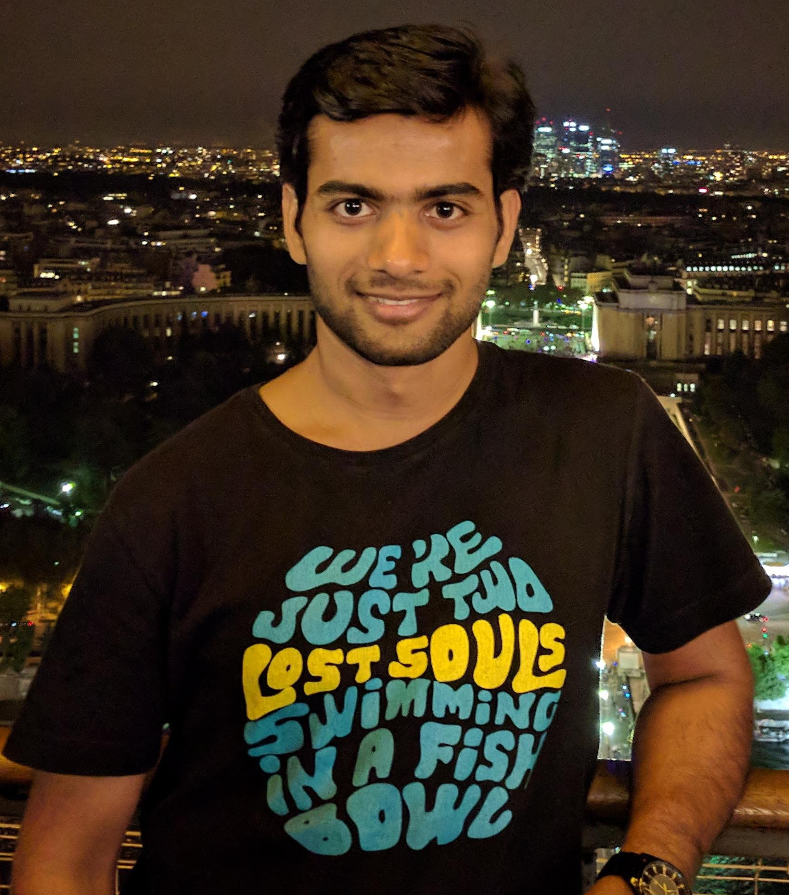

Hi! I am a PhD student in the David R. Cheriton School of Computer Science at the University of Waterloo.
I research and build graph processing systems as a member of the Data Systems Group with Prof. Semih Salihoglu.
Research Interests
I'm interested broadly in large-scale data management and data processing systems. Specifically, my current research is on managing and processing graph data.
- I worked on Graphflow, a new open-source graph database that supports continuous queries and uses worst-case optimal join algorithms.
- Currently, I'm working on how to automatically detect and clean errors in graph data.
Publications
- The Ubiquity of Large Graphs and Surprising Challenges of Graph Processing. Siddhartha Sahu, Amine Mhedhbi, Semih Salihoglu, Jimmy Lin, and M. Tamer Özsu. PVLDB, 2017.
- Graphflow: An Active Graph Database. Chathura Kankanamge, Siddhartha Sahu, Amine Mhedhbi, Jeremy Chen, and Semih Salihoglu. In Proc. ACM SIGMOD (Demo Track), 2017.
Work Experience
- Operations Engineer @ Media.net (July 2014 - August 2016)
- Remote intern as Tech Wizkid @ Letsintern.com (May 2012 - March 2014)
Awards
- David R. Cheriton Graduate Scholarship, 2017 - 2019
- SIGMOD Travel Award, 2017
- University of Waterloo Entrance Scholarship, 2016 - 2017